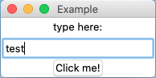

Créer une application avec Tkinter
04-03-2021
Description
Tkinter est une bibliothèque qui sert à réaliser des GUI (Graphical User Interface).
Elle est intégrée de base à Python3 (pas besoin d'installation, de faire pip install).
Liens utiles
-
Tutoriel Les bases qui permettent de construire une première application simple (un éditeur de texte pour créer des fichiers txt en l'occurrence). Détaille de manière claire la partie graphique.
-
Tutoriel va plus loin dans les explications, en donnant du contexte. Tutoriel multi-langage de programmation.
-
Exemple MVCexemple d'une application Tkinter construite avec l'architecture MVC
-
Lien vers pyinstaller afin de générer un fichier exécutable (.exe sur windows)
-
Documentation officielle tkinter orientée expert.
Importer la bibliothèque tkinter et créer un objet tkinter
from tkinter import *
window=Tk()
window.mainloop()
L'objet nommé ici window crée l'application. Entre ces 2 lignes, on place les 'widgets' ('bitoniot / petit dispositif de commande' traduction au choix) comme des champs et des boutons.
Les noms des widgets sont explicites Button, Text, Label, Listbox.
Il est possible de les configurer.
L'application peut être liée à une base de données ou une API. Il est possible de générer et de gérer des fichiers.
ttk est la version utilisée depuis Python 3.1 avec des widgets associés à des thèmes graphiques.

Avis personnel
Tkinter a été créée initialement en 1988 en tcl, plus ancienne que python donc. Elle existe aussi en PERL et en Ruby.
Le résultat a vite un look "informatique des années 90".
Tkinkter utilise, par défaut, les composants du système d'exploitation (windows, mac os ou linux). Le mieux est de conserver le style par défaut.
Pratique pour faire rapidement des utilitaires de bureau.
La GUI leader est electronjs en javascript basée sur Nodejs (visual studio code, figma, whatApps, slack, facebook messenger et d'autres ont été créées avec)
En Python, la plus sophistiquée est PyQt (dropbox a été développée avec)
eel est une version "style electron" allégée utilisant HTML/CSS/JS et basée sur Python un exemple dans cet article. les créateurs de 'eel' citent cefpython comme une version plus proche de electron et aussi plus complexe.